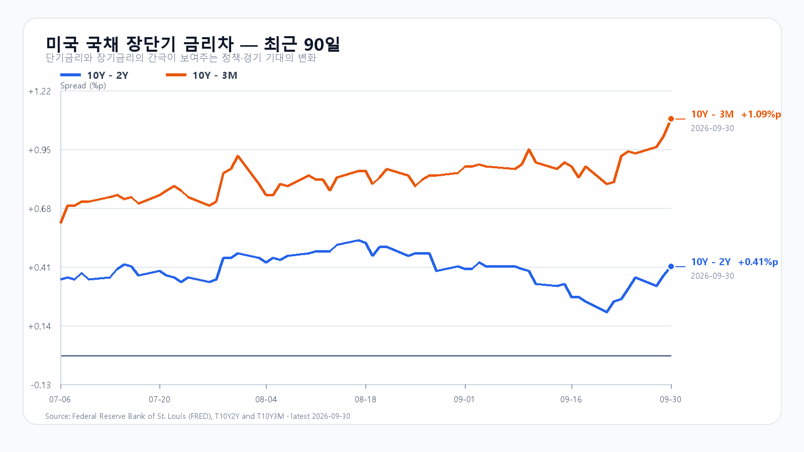
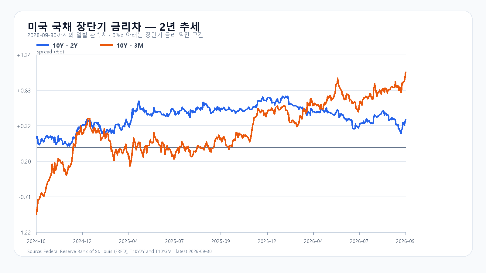

Micron이 4분기 매출 542억3천만달러를 발표하고 다음 분기 매출 가이던스를 600억~630억달러로 제시했다. AI 데이터센터의 메모리 수요가 이어진다는 회사의 확인이다. 미국 정규장에서 SOXX는 0.21%, SMH는 0.35% 올랐고 Nvidia도 0.52% 상승했다. 장전 NXT에서 삼성전자와 SK하이닉스가 각각 0.37%, 0.34% 오르는 흐름도 이 재료와 맞닿아 있다.
다만 9월 30일 KOSPI는 6,838.04로 마감했고 KODEX 레버리지는 109,470원으로 0.74% 내렸다. Micron의 실적 호재가 오늘 국내 반도체주의 반등을 뒷받침하더라도, 전날 국내 조정과 미국 반도체 상승분을 같은 충격으로 겹쳐 계산할 이유는 없다. 개장 뒤 외국인과 프로그램 수급이 따라붙는지가 더 중요하다.
금리와 환율은 상단을 제약한다. 미국 10년물은 5.26%, 2년물은 4.89%였고 10년-2년 금리차는 0.41%포인트로 넓어졌다. Brent 선물은 97.61달러로 0.43% 내렸지만 높은 절대 수준은 남아 있다. 하나은행 원/달러 고시는 1,358.00원으로 0.33% 올랐다. 메모리 수요의 개선과 할인율·환율 부담은 같은 방향의 신호가 아니다.
메모리 현물은 마지막 공개값 기준으로 DDR5 16Gb가 57.667달러, DDR4 16Gb가 83.784달러다. Micron의 가이던스는 서버 메모리 수요의 강도를 보여 주지만, 국내 주가에는 이미 높은 기대와 장중 수급이 함께 반영된다.
기본 시나리오는 KOSPI 6,750~6,900, 확률 50%다. Micron 실적과 장전 메모리주 강세가 6,750선 하단을 받치되, 5%대 장기금리와 원/달러 상승이 6,900선 위 추격을 제한하는 경우다. 6,900을 넘고 외국인 현물과 프로그램이 함께 순매수로 전환하면 6,900 초과~7,050의 강세 범위를 본다. 반대로 6,750을 이탈하고 두 수급이 순매도로 기울면 6,550~6,750 미만의 약세 범위가 열린다.
KODEX 레버리지는 107,500원을 1차 지지, 109,470원을 반등 기준, 112,000원을 저항으로 둔다. 장중 고저 예상 범위는 KOSPI 6,500~7,050이다. 대응 점수는 공격 30, 관망 55, 방어 15이다.
| 종가 시나리오 | 범위·확률 | 15시 20분 확인 조건 | 전환 신호 |
|---|---|---|---|
| 기본 | 6,750~6,900 · 50% | 6,750 이상 · 6,900 이하 · 외국인 매도 급확대 없음 | 범위 이탈 |
| 강세 | 6,900 초과~7,050 · 30% | 6,900 초과 · 외국인·프로그램 동반 순매수 | 6,900 아래 재진입 |
| 약세 | 6,550~6,750 미만 · 20% | 6,750 미만 · 외국인·프로그램 동반 순매도 | 6,750 회복 |

